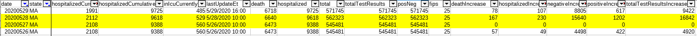
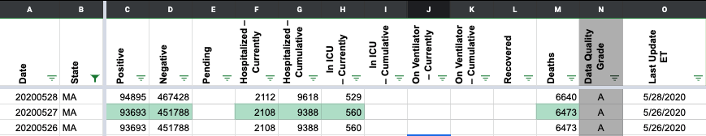
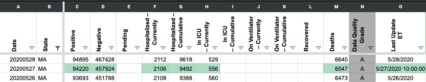
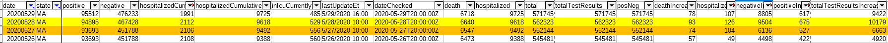

[Historical MA] Data is missing/incorrect for 5/27-5/28 in states_daily_4pm_et.csv
Data is missing for 5/27 and incorrect for 5/28
https://www.mass.gov/doc/covid-19-dashboard-may-27-2020/download - May 27 data
https://www.mass.gov/doc/covid-19-dashboard-may-28-2020/download - May 28 data

Hi Andrew! Thanks. We will look into it ASAP.
Hi @andrewghaly, Thanks for bringing this to our attention! It looks like we updated our data before MA posted its update on 5/27, and instead carried over the numbers from 5/26. I have adjusted all the numbers to reflect to the PDF report on 5/27. However, I double checked everything on 5/28 and it all looked correct to me, so I left our data as is.
Before: 
After: 
Thanks @karaschechtman, the 28th was only incorrect in the totals due to the previous day so that could be why. I opened a similar issue #455, for a different date.

Please review